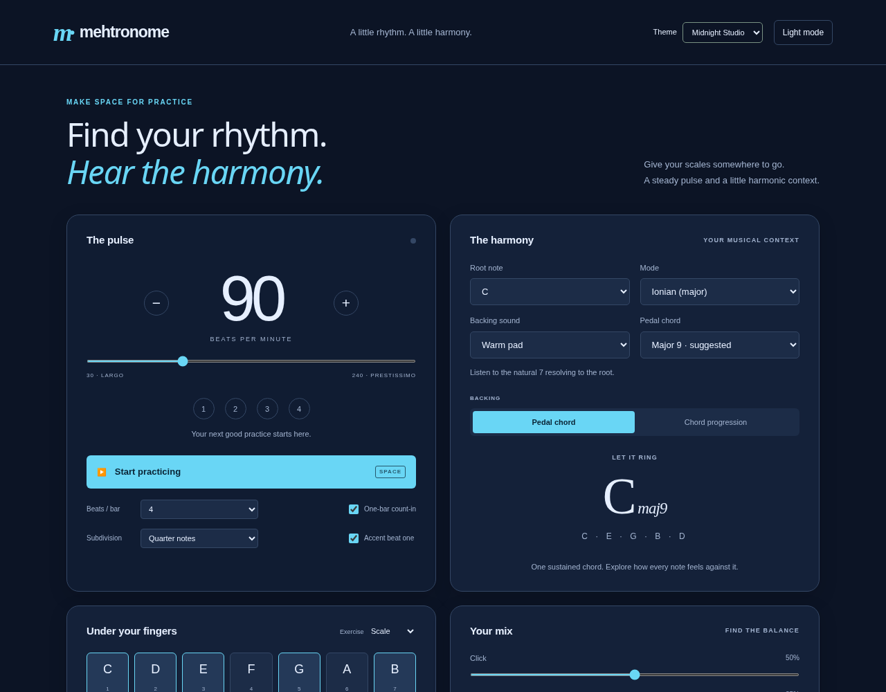
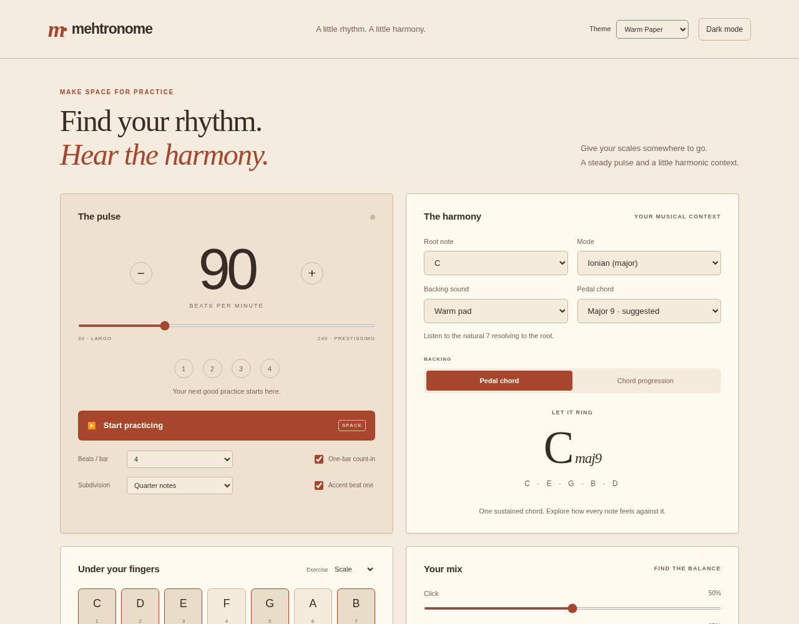
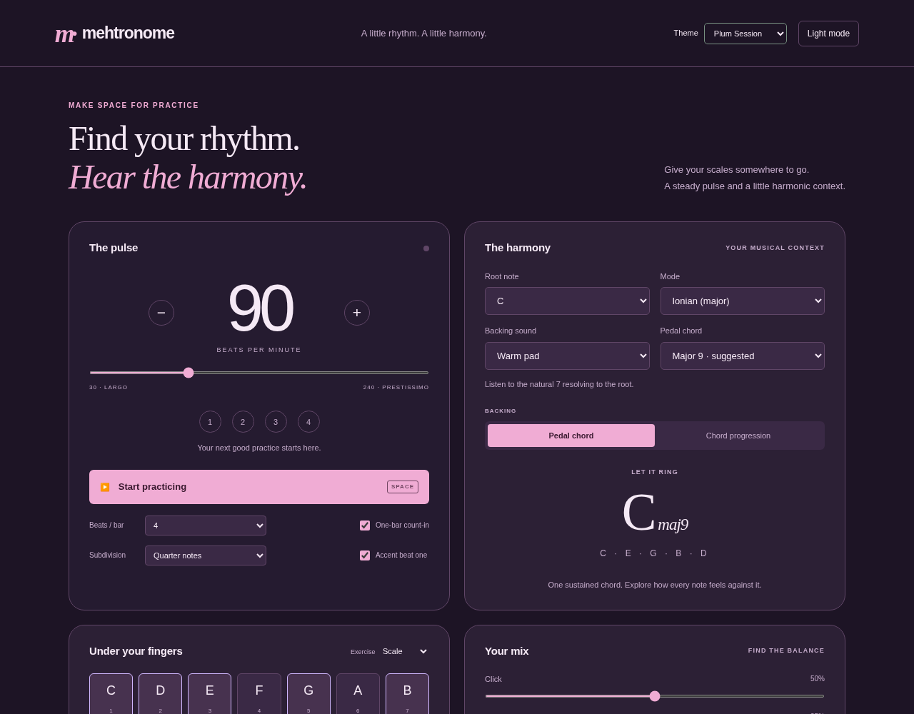
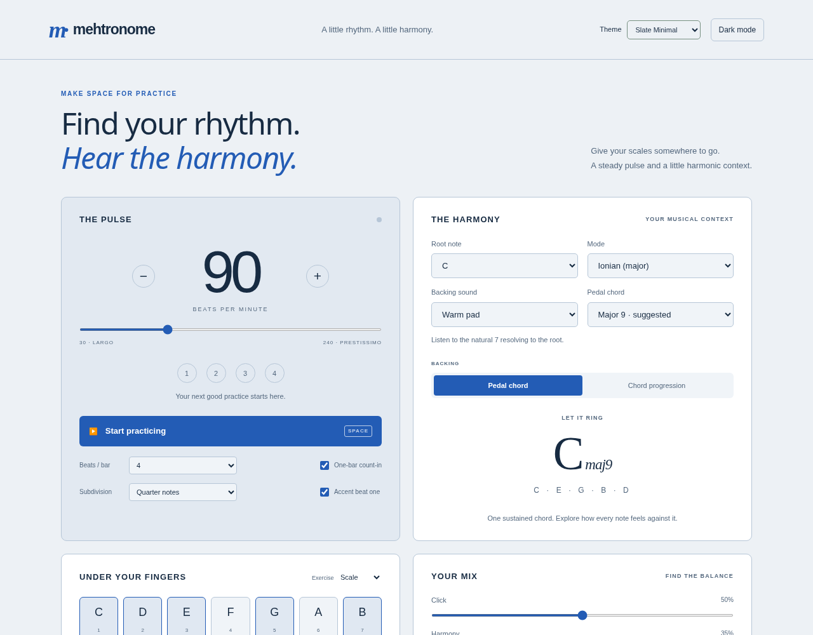

01 · Midnight Studio
Deep navy · cyan · modern studio controls
Actual app previews. Try a theme live, or switch with the Theme menu in the app.

Deep navy · cyan · modern studio controls

Cream · terracotta · a printed practice journal

Aubergine · rose · soft late-night atmosphere

Cool grey · blue · clean and understated